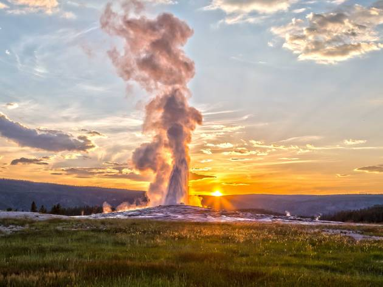
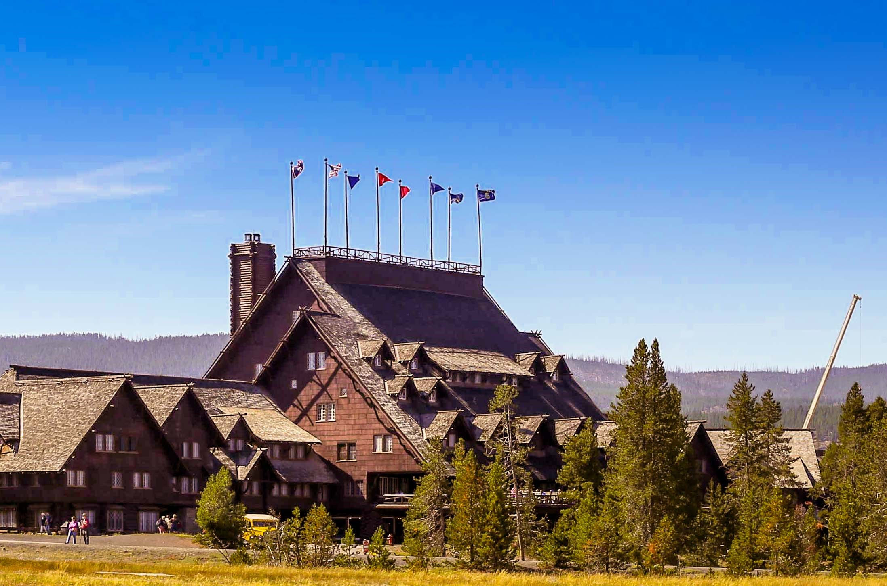

Old Faithful Geyser
Old Faithful reaches a height between 106 and 180 feet. Eruptions last from one to five minutes, and erupts every hour and a half, give or take ten minutes. Old Faithful expels 3,700 to 8,400 gallons of water around 203 degrees at every eruption. It is one of the more famous parts of the park and people come from all over the world to see Old Faithful erupt.

Old Faithful Inn is a historic lodge located near the famous geyser. With accommodations throughout the summer you can stay close to the geyser and see it erupt throughout the day and night, with some rooms having a geyser view. Built in 1903-1904, the lodge has 327 rooms, and was built from logs and stones from the surrounding area. Rich in history and considered the largest log structure in the world, the beautiful lodge is the perfect place to stay during your visit to the park.